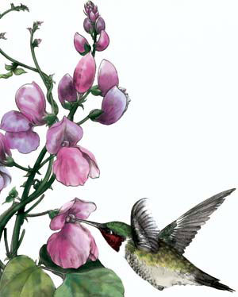

JUDITH ANN GRIFFITH/SEED SAVERS EXCHANGE
A hummingbird feeds on the nectar of hyacinth bean flowers. This striking annual vine produces unique shiny, purple seedpods. Its leaves, seeds, pods and roots are edible (although the seeds and pods must be cooked properly).